Camila Cesar
Bern, Switzerland (open to relocation)
About Me
I am a planetary scientist with a multi-disciplinary training in space mission operations, remote sensing,
experimental project design & management, big data collection, processing & analysis.
Seismologist and Geologist by training, I was interested in stuying other planets early on.
I was given an opportunity to do a doctoral research at the University of Bern (Switzerland) to
study the Martian polar regions using high resolution images from the
Colour and Stereo Surface Imaging System (CaSSIS) camera onboard the ExoMars Trace Gas Orbiter
and understand the origin of the seasonal spots, fans and araneiform structures.
This project was coupled to experimental work at the IceLab facility to recreate similar processes
(formation of a thick translucent ice slab covering a dusty martian surface) and analyse the evolution of
the spectophotometric properties during its formation and sublimation phases.
Growing up in the Caribbean, I have always been sensitive to environmental
consciousness and sustainability awareness. As a certified diver, I am highly
committed to ocean & wildlife protection and preservation. I aspire to offer insights
and have a positive impact on various audiences through educational outreach initiatives.
Coming from a multicultural family, I place the highest importance on creating
environments that values inclusiveness, diversity, and equality as core principles.
Volunteering & Outreach
Highlighting my engagement in space sciences and my strong dedication to environmental causes, I firmly believe in the significance and positive impact of outreach activities that engage diverse audiences, especially young individuals. The following list showcases the events in which I've taken part. Please note that all images used are either from the public webpages/videos of the events or my own, the web resources are provided as hyperlinked underlined text.
— Underwater Waste Collection (Oct 2023) —
Debris sorting crew for a major underwater cleanup event in Arcachon (France) with The SeaCleaners, Nettoyeurs SubAquatiques & MerTerre (YouTube video here in French).
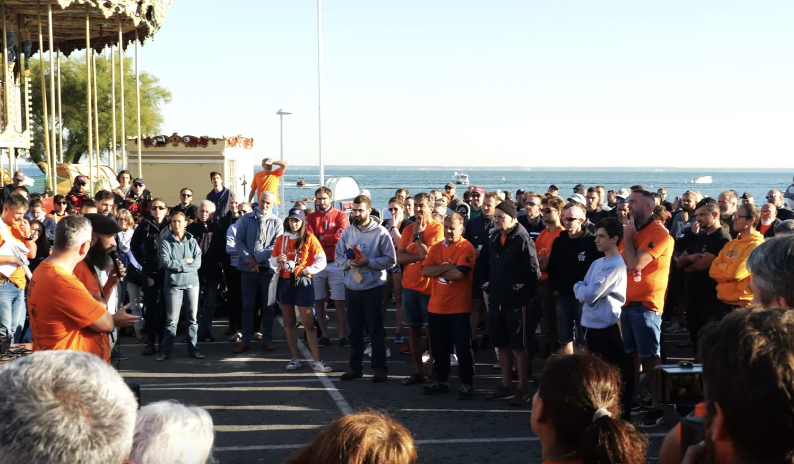 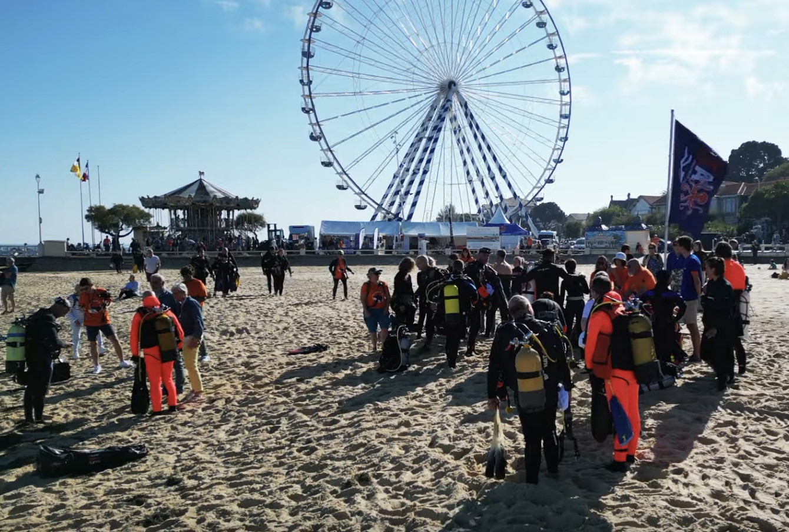 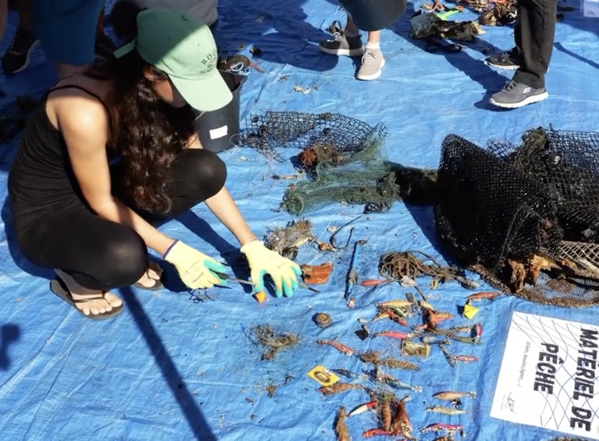
— CaSSIS Mars demystified (2023) —
Laboratory specialist and scientific consultant for a series of short educative videos on Mars. Links to EP1, EP2 and Magic Science Pro webpage.
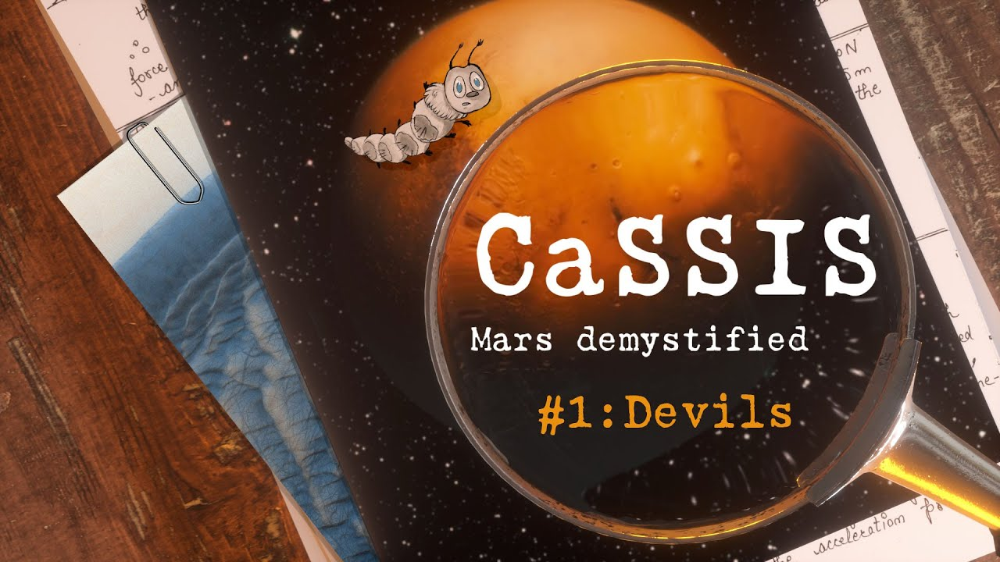 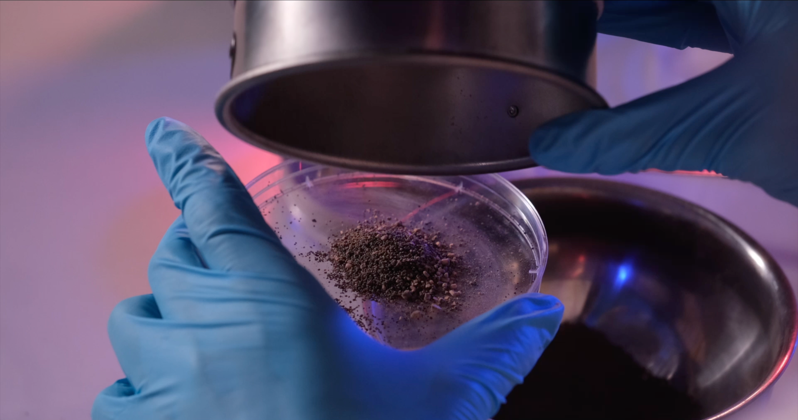
— AstroVoices (Nov 2022) —
Appareance on the AstroVoices project of the International Astronomical Union for the celebration of the diversity of women in Astronomy and the UNESCO World Science Day for Peace and Development. Bern im All event with the University of Bern.
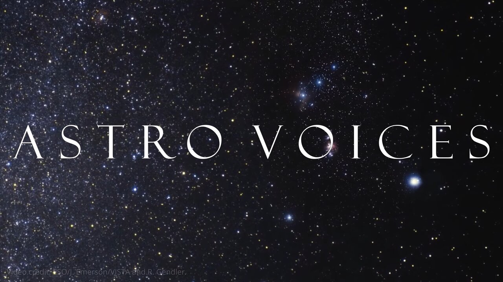

— Nacht der Forschung (Sept 2022) —
Animator on the "Build your comet" booth for the Night of Research public event with the University of Bern.
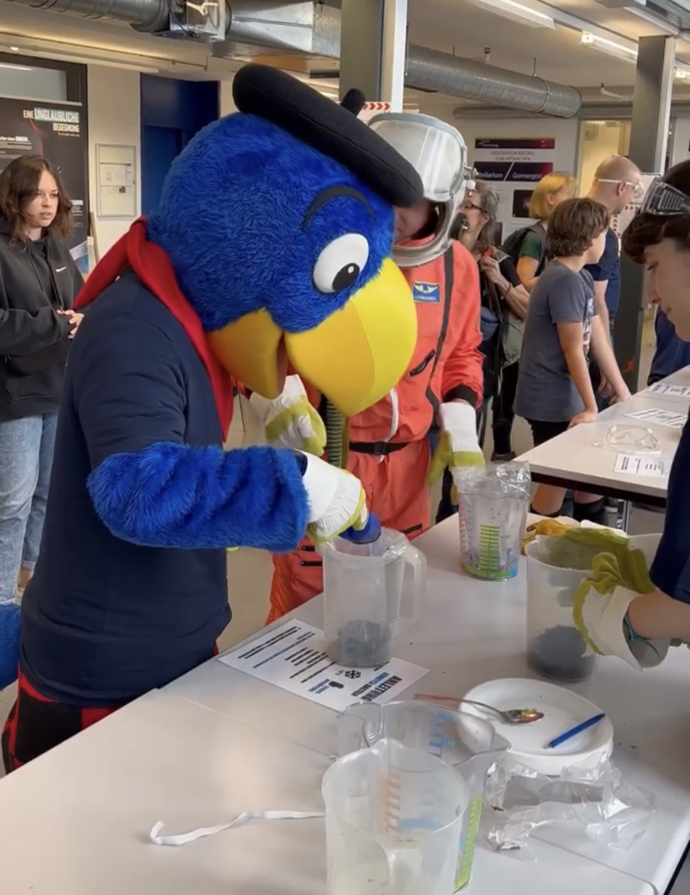 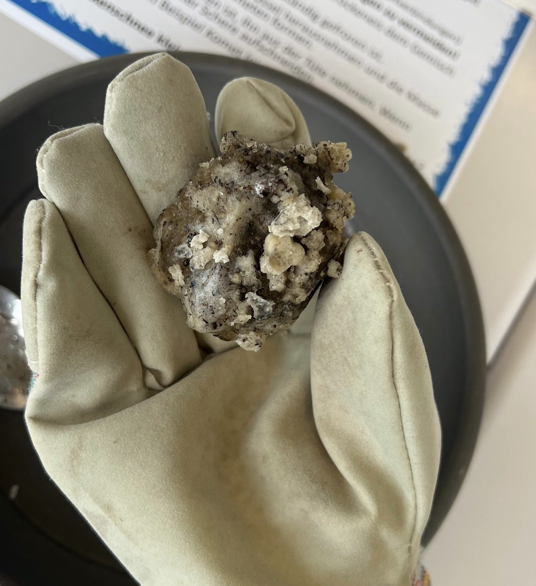 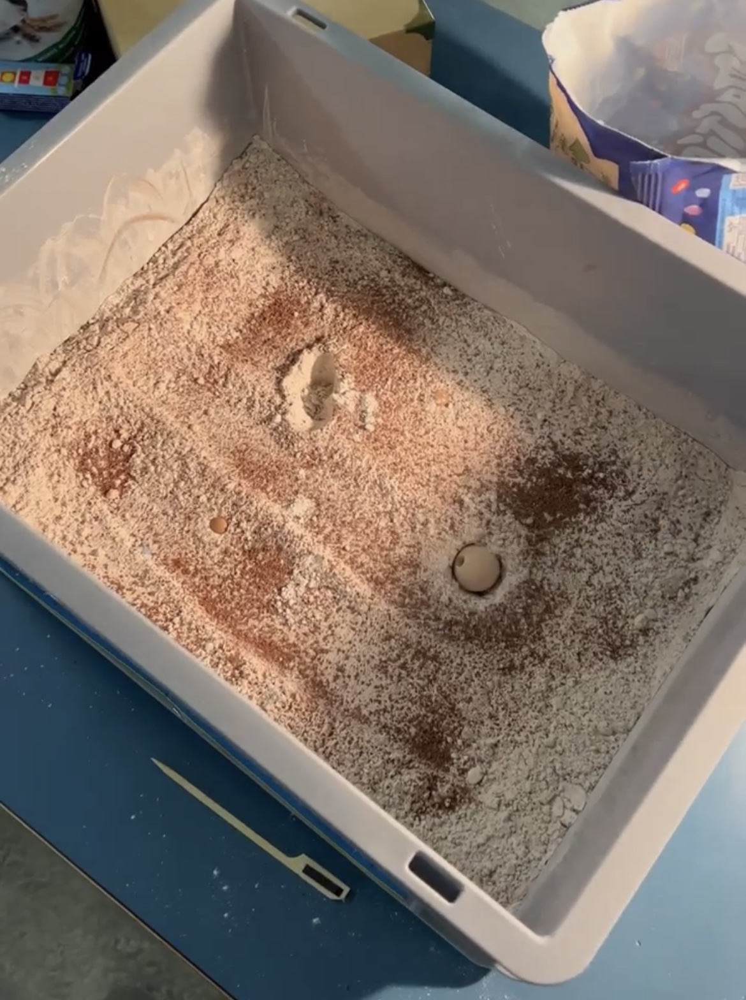 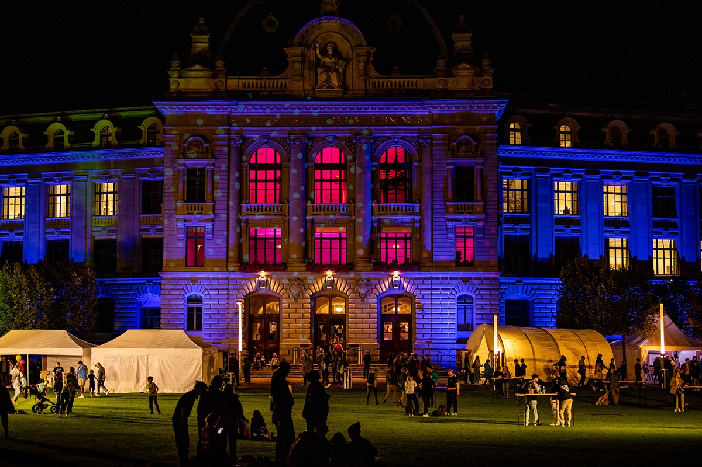
— Bilder vom Mars (Mar 2022) —
Contributor and translator for the Book Bilder vom Mars.
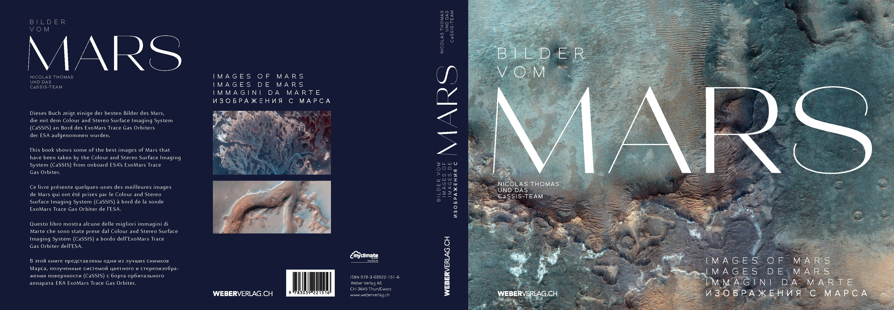
— Bern im all (Jun 2019) —
Interviewed for the "Next Generation Space Scientists" local film viewing for the Bern im All event with the University of Bern.
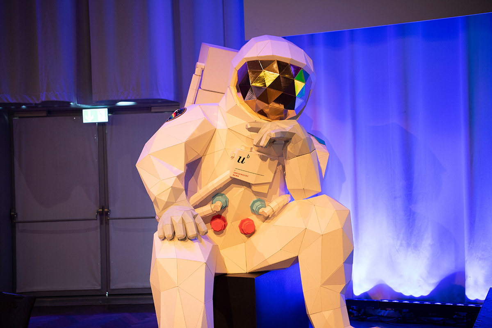 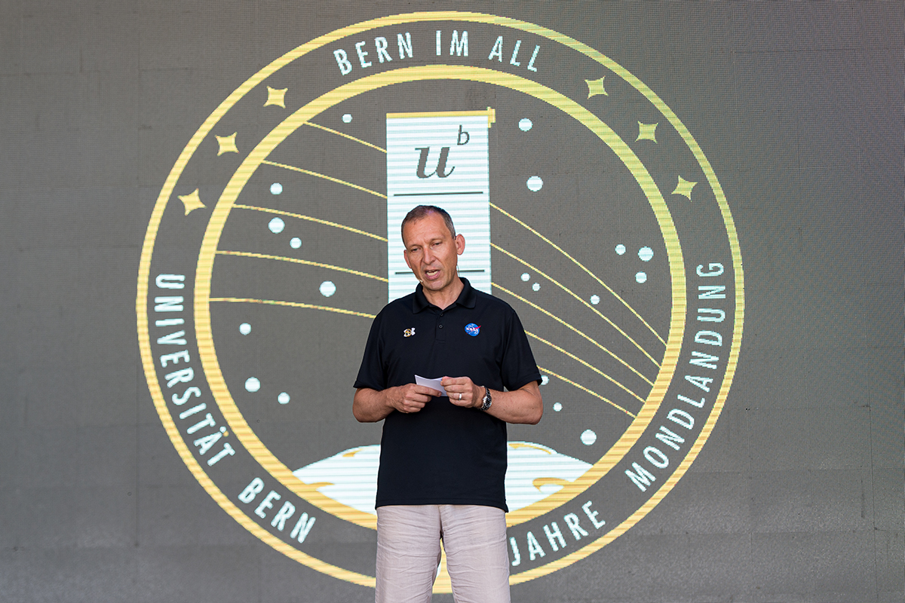 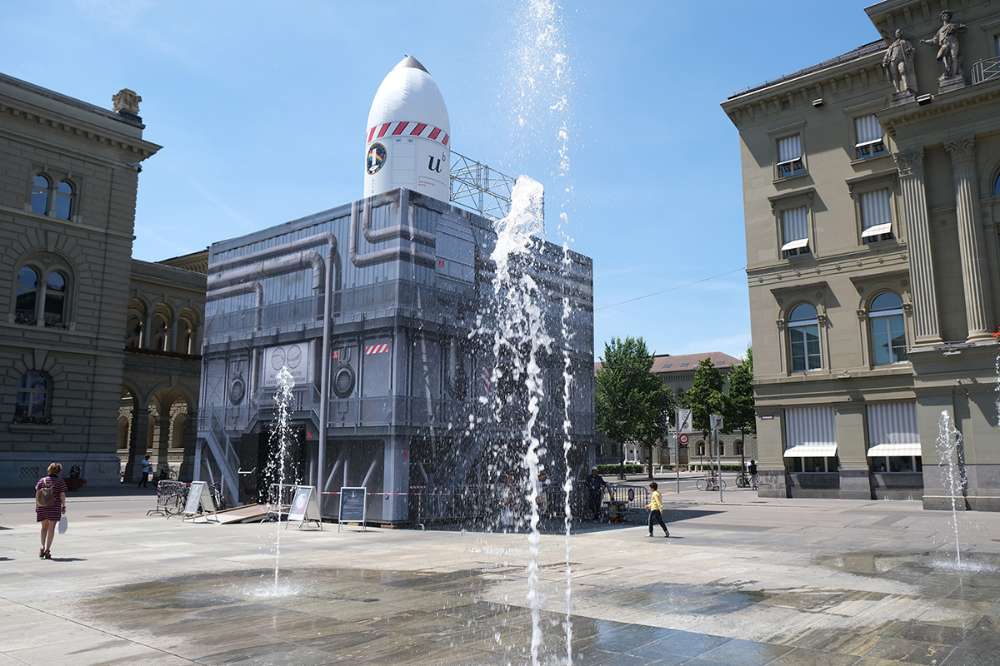
— Scout Leader (2014-2017) —
Guidance and oversight of children aged 8 to 14 with environmentally conscious educational activities with the Scouts et Guides de France (SGDF)
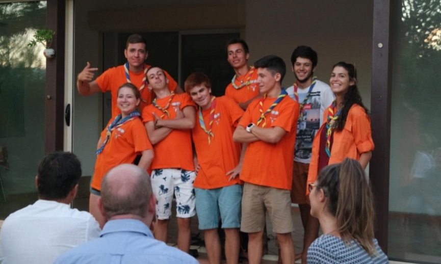
— Cetacean Week Exposition (Nov 2009) —
Cetacean information booth animator for the Cetacean Week event in Guadeloupe with Evasion Tropicale and the special participation of French Journalist Frédéric Courant (C'est pas sorcier).
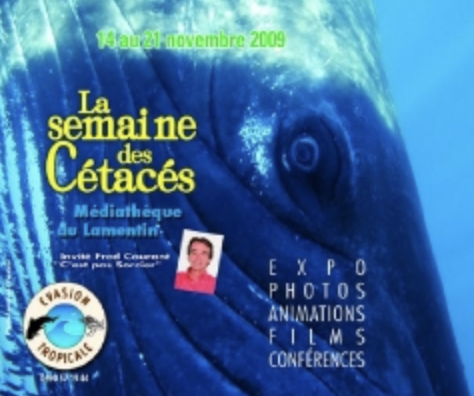 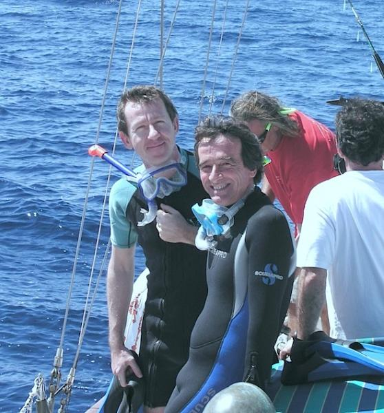
Publications
— In preparation —
Cesar C., Pommerol A., Thomas N. (in preparation) Experimental study of seasonal CO2 ice at high Martian latitudes : formation, sublimation and spectrophotometry.
Thomas N., Pommerol A., Hauber E., Portyankina G., Tirsch D., Schmidt F., Cesar C., Valantinas A., Bickel V. (in preparation) Seasonal changes on the Martian surface : Multi-spacecraft perspectives.
Tornabene et al. including Cesar C. (in preparation) Spectral signatures from the CaSSIS colour band ratios.
Conway S., Beck C., Herny C., Cesar C., Sylvest M., Patel M. (in preparation) An experimental study of the effect of dust on sublimation induced mass movement on Mars.
— 2022 —
Cesar, C., Pommerol, A., Thomas, N., Portyankina, G., Hansen, C.J., 2022, EGU General Assembly (Conference Talk, abstract #13204), Laboratory simulations of Martian Southern Spring : the outcome of CO2 cold jets
Cesar, C., Pommerol, A., Thomas, N., Hansen, C.J., Portyankina, G., 2022, 53rd LPSC (Conference Talk, abstract #2388), Seasonal activity at South Polar regions of Mars leading to a potential evolution model
Hansen C. J., Cesar, C., Conway S., Pommerol A., Portyankina G. et al. , 2022, 53rd LPSC (Conference Poster, abstract #2480), Searching for Seasonal Jets on Mars in CaSSIS and HiRISE Images Over Multiple Mars Years
— 2021 —
Cesar, C., Pommerol, A., Thomas, N., Portyankina, G., Hansen, C.J., Tornabene, L.L., Munaretto, G., Cremonese, G. , 2021, Planetary & Space Science (doi:10.1016/j.pss.2022.105593), Seasonal southern circum-polar spots and araneiforms observed with the Colour and Stereo Surface Imaging System (CaSSIS)
Pommerol, A., Thomas, N., Almeida, M., Read, M., Becerra, P., Cesar, C., Valantina, V., Simioni, E., McEwen, A. S., Perry, J., Marriner, C., Munaretto, G., Pajola, M., Tornabene, L.L., Mège, D., Da Deppo, V., Re, C., Cremonese, G., 2021, Planetary & Space Science (doi:10.1016/j.pss.2022.105580), In-flight radiometric calibration of the ExoMars TGO Colour and Stereo Surface Imaging System
Smith, I. et al., 2021, Planetary Sciences Decadal Survey 2023-2032 ( doi:10.3847/25c2cfeb.4db95c67 ), Solar-System-Wide Significance of Mars Polar Science
Tornabene, L.L., Becerra, P., Cesar, C., Conway, S., Cremonese, G., Lucchetti, A., Munaretto, G., McEwen, A., Pajola, M., Patel, M., Perry, J., Pommerol, A., Rangarajan, V., Seelos, F., Thomas, N., Wray, J., 2021, 52nd LPSC (Conference Poster, abstract #2459, iposter), Potential Detection of Exposed Martian Water Ice with Multispectral Images from the 2016 Exomars TGO Colour and Stereo Surface Imaging System (CaSSIS)
— 2020 —
Cesar, C., Pommerol, A., Herny, C., Hansen, C.J., Portyankina, G., Thomas, N., 2020, 7th Mars Polar Science, Ushuaia Argentina (Conference Talk, abstract #6044), CO2 ice and MGS-1 mars global simulant : experimental work to recreate dark spot evolution activity and self-cleaning processes observed by CaSSIS.
— 2019 —
Cesar, C., Pommerol, A., Thomas, N., Becerra, P., Hansen, C.J., Portyankina, G., Cremonese, G., 2019, 9th Int. Conf. on Mars, Pasadena USA (Conference Poster, abstract #6253), Polar Spots on Mars observed with the Colour and Stereo Surface Imaging System (CaSSIS)
Cesar, C., Pommerol, A., Thomas, N., Becerra, P., Hansen, C.J., Portyankina, G., Cremonese, G., 2019, EPSC-DPS, Geneva Switzerland (Conference Poster, abstract #697), Polar Spots on Mars observed with the Colour and Stereo Surface Imaging System (CaSSIS)
Hansen, C., Conway, S., Portyankina, G., Thomas, N., McEwen, A., Perry, J., Pommerol, A., Cesar, C., 2019, EPSC-DPS, Geneva Switzerland (Conference Poster, abstract #388), Searching for Seasonal Jets on Mars in CaSSIS and HiRISE Images
Becerra, P., Thomas, N., Pommerol, A., Almeida, M., Cesar, C., Simioni, E., Tulyakov, S., Cremonese, G., and The CaSSIS Team, 2019, EPSC-DPS, Geneva Switzerland (Conference Poster, abstract #707), CaSSIS Observations of Polar and Circumpolar Layered Deposits on the Martian Southern Hemisphere
— 2018 —
Cesar, C., 2018, 2nd GeoPlaNet, Nantes France, Martian active polar processes observed with the Colour and Stereo Surface Imaging System (CaSSIS)
Grants & Awards
— Oct/Nov 2022 —
Europlanet2024 Research Infrastructure Award
Trans-National Access (TNA) research grant of 2.5k€ for the Mars Chamber facility
at the Open University in Milton Keynes.
— Nov 2018 —
GeoPlaNet Travel Grant
2nd Thematic School at the Laboratoire de Planétologie et Géodynamique in Nantes.